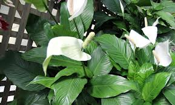

Spathiphyllum

Spathiphyllum (Spathiphyllum floribundum de la famille des Aracées)
Toxique pour le Korat.
Partie toxique pour les chats en général et le Korat en particulier :
Feuilles Tiges.
Symptômes du processus pathologique :
Système digestif: Salivation, diarrhée, vomissements, saignements.
Voies respiratoires / poumon: Dyspnée, respiration difficile, le rythme et la profondeur de la respiration sont perturbés.
Organes internes: Saignements de l'utérus.
Autre: Saignements des gencives, difficultés à déglutir.
Origine de la toxicité (principe actif) :
Cristaux d'oxalate de calcium.